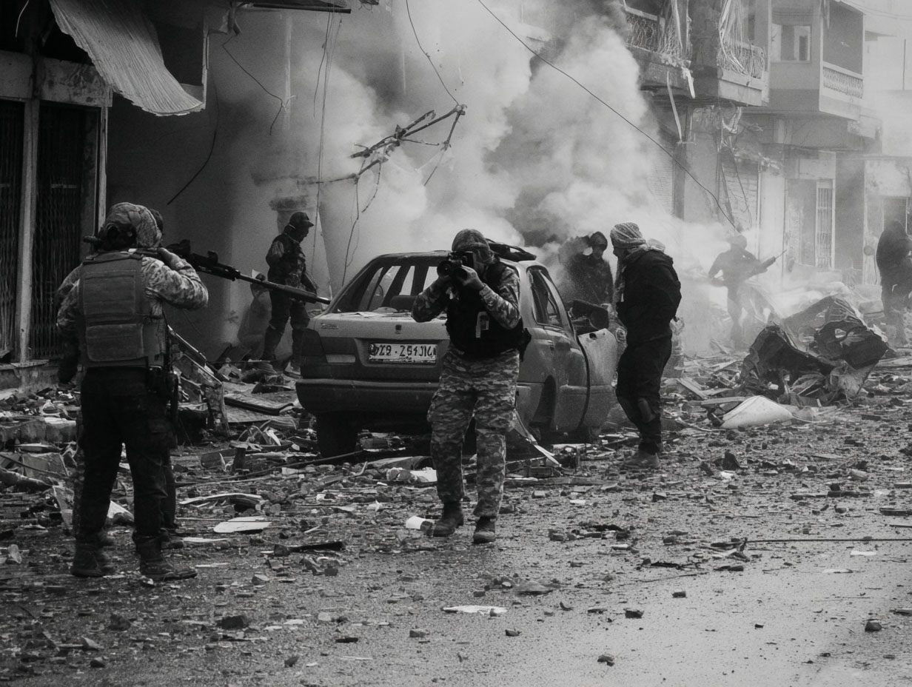
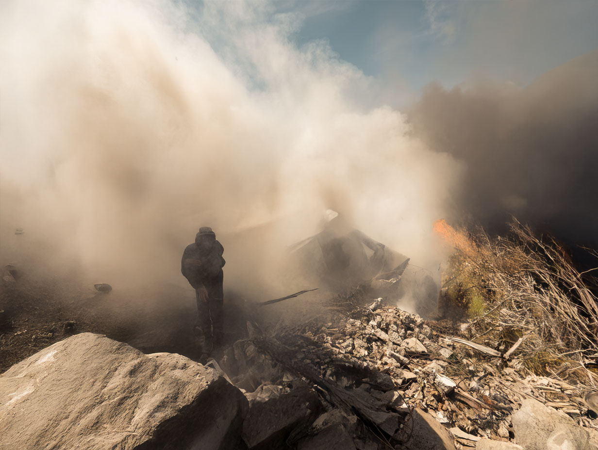
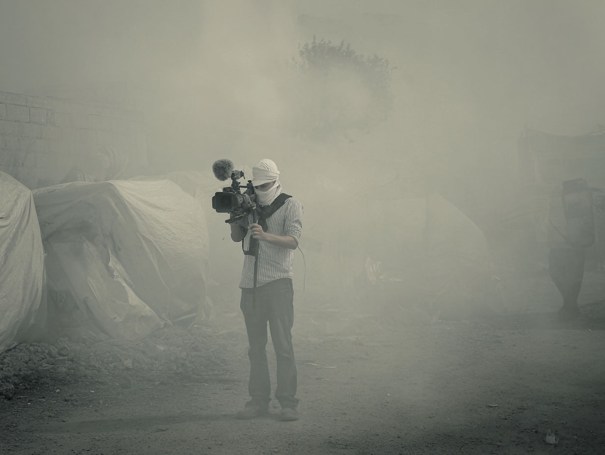
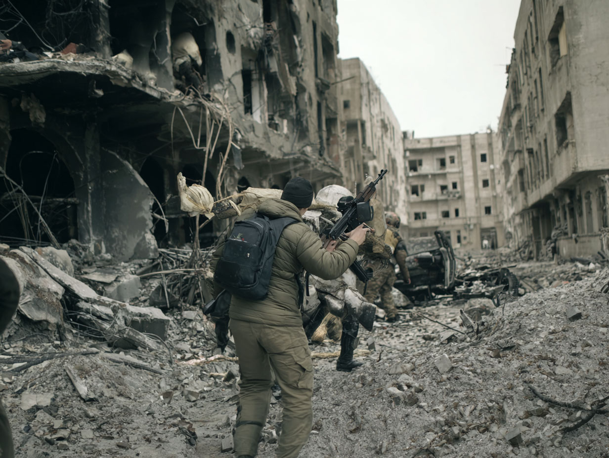
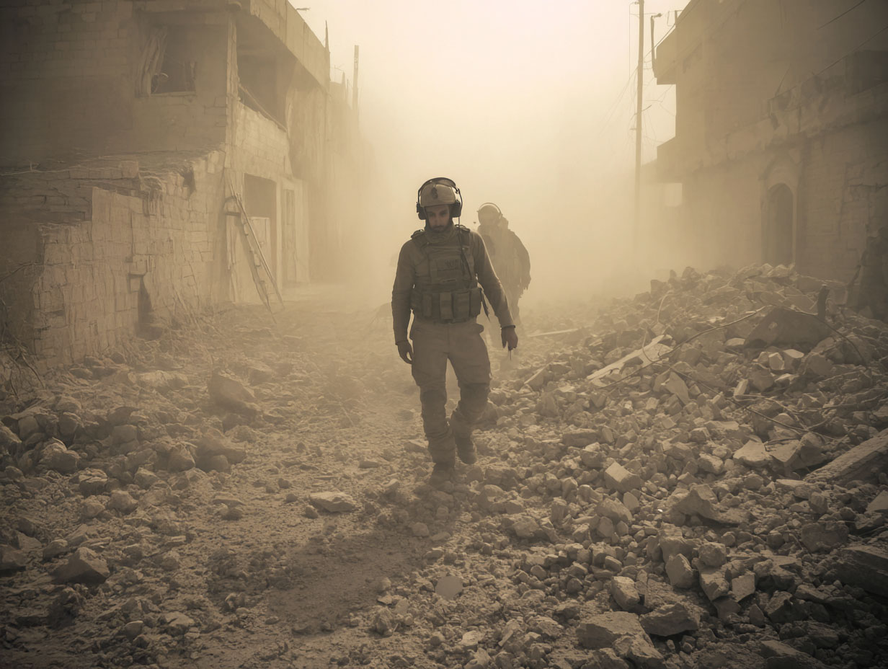

"You get used to the smell of burning paper. It's the smell of history being erased."

Three minutes after detonation. The local stringers are always the first to arrive. We just document the ashes.

He walked out of the dust without making a sound. Nobody knew who he belonged to, or if his home was the one that just fell.

We transmit this horror so people can scroll past it on their lunch breaks. It's a surreal economy.

No uniform. No tags. Just a rifle and a backpack full of somebody else's orders.
"I don't point the camera at the soldiers. I point it at what they leave behind."

I operate on the fringes. Where the official narrative stops, the raw truth begins. The networks don't want these photos because they don't have a clean resolution. There are no good guys here. Just victims and infrastructure.
I sell these images to whoever pays, because the truth doesn't fund satellite uplinks.
[ ENCRYPTED CONTACT INITIATED ]